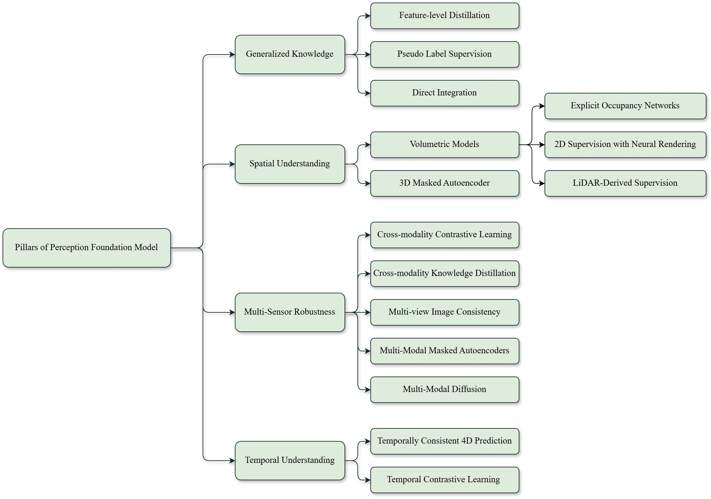

本論文は、自動運転知覚（perception）における基盤モデル（Foundation Models）の活用を包括的にサーベイしたものである。著者はRajendramayavan SathyamとYueqi Liで、arXiv 2509.08302として公開されている。従来の手法中心型サーベイとは一線を画し、4つの本質的能力を中心に据えた能力駆動型の新しい分類体系を提案している点が特徴的である。
基盤モデルは自動運転知覚に革命をもたらしつつある。大量かつ多様なデータで学習された汎用アーキテクチャは、特定タスクに特化した狭いディープラーニングモデルから、より広範な活用が可能な構造への移行を促している。このサーベイは、基盤モデルが自動運転知覚における重大な課題——汎化の限界、スケーラビリティの欠如、分布シフトへの脆弱性——にどう対処するかを体系的に分析する。
本サーベイが提案する新しい分類体系は、動的な走行環境における頑健な性能に必要な4つの本質的能力を軸に構成されている。これにより、マルチセンサーロバスト性や空間認識といった既存のサーベイでしばしば見落とされてきた側面を深く掘り下げる「より焦点を絞った深い分析」が可能となる。
モデルが「稀または未知のシナリオを含む広範な走行シナリオに適応できる」ことを意味する。基盤モデルの3つの主要な統合メカニズムが特定されている。
対象となるモデルタイプは、DINOやSAMなどのVision Foundation Models（VFMs）、CLIPやGrounding DINOなどのVision-Language Models（VLMs）、そしてモダリティを横断した統一推論のためのLarge Language Models（LLMs）を含む。
この能力における主要な課題として、ウェブスケールの事前学習データと専門的な走行センサー間のドメインギャップ、安全上の脅威をもたらす幻覚リスク、リアルタイム要件と競合するレイテンシ制約、大規模知覚モデルの解釈可能性の限界が挙げられている。
「物体のアイデンティティ、ジオメトリ、コンテキストを捉えた一貫した3D表現」を構築する能力である。3つの主要アプローチが分析されている。
MAEを点群・ボクセルに拡張したもので、MAELiなどのモデルが「LiDARの球面座標に基づいてガイドされた欠損部分の再構成」によって3D構造を学習する。
この能力の課題は、計算レイテンシ、計画モジュールとの統合の複雑さ、新しい学習手法にもかかわらず高品質な3Dグラウンドトゥルースへの継続的な依存である。
カメラ、LiDAR、レーダーにまたがって「環境変化、センサーノイズ、ハードウェア劣化にもかかわらず知覚精度を維持する」能力である。
「時間的依存関係を捉え、将来の環境状態を予測する」能力である。以下の手法群が含まれる。
サーベイは6つの主要課題を特定している。
本サーベイの最大の特徴は、より広範な自動運転タスク（計画・予測など）ではなく知覚に特化していることである。これにより、空間認識とマルチセンサーロバスト性を手法中心型の分類では到達できないレベルまで詳細に分析できる。能力を軸にした分析は、研究者が「特定の欠陥を特定して対処するための体系的なガイド」を提供し、より安全で高性能な自動運転システム開発に向けた「目標を絞ったイノベーション」を促進する。